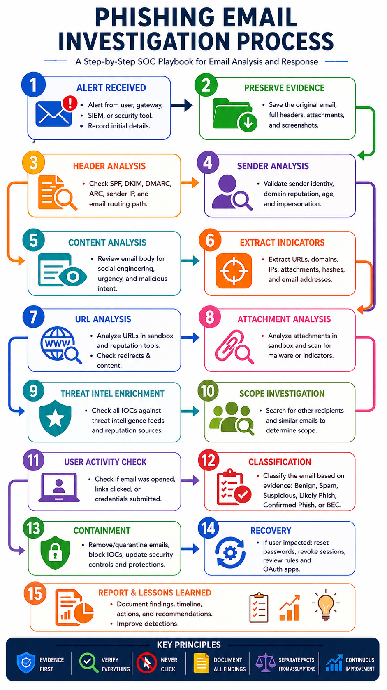
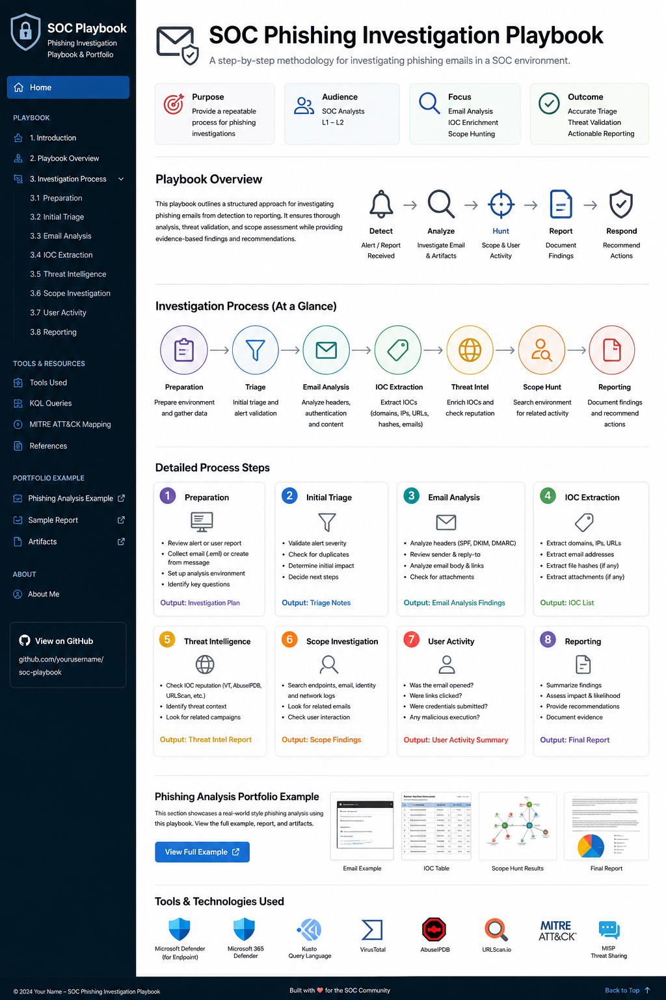

Purpose
Provide a clear routine that reduces missed evidence and prevents assumptions from becoming findings.
A repeatable, evidence-led workflow for investigating suspicious emails from alert receipt through scope hunting, user-impact validation, response and final reporting.

Provide a clear routine that reduces missed evidence and prevents assumptions from becoming findings.
Junior SOC analysts, cyber-security students, blue-team trainees and portfolio reviewers.
Email headers, sender legitimacy, content, IOCs, threat intelligence, scope and user activity.
A defensible classification, documented evidence, verified response actions and actionable recommendations.
Complete each phase in order. Record what was checked, the source of the evidence, the result, and any limitations.
Confirm the alert source, affected mailbox, subject, sender, timestamps, delivery status and user report details.
Save the original .eml or .msg, full headers, body, screenshots, URLs and attachments.
Review sender identity, routing and authentication evidence.
Assess sender legitimacy and identify the social-engineering lure.
Extract and safely document email addresses, domains, IPs, URLs, attachment names and hashes.
Use reputation services first, then controlled behavioural analysis where justified.
Corroborate IOCs using multiple reputable sources and record the exact verdict returned.
Search the monitored environment for the same sender, subject, domain, URL, Message-ID and related lure themes.
Validate what the user did and distinguish user statements from technical telemetry.
Choose a verdict supported by evidence, then complete actions within the analyst’s authority.
Summarise what happened, what was proven, what remains unknown and what the organisation should improve.
Email telemetry, Advanced Hunting, scope analysis, Safe Links clicks and post-delivery activity.
Search sender, subject, recipient and URL telemetry while preserving reproducible evidence.
URL, domain, IP and file reputation enrichment. A zero score does not prove safety.
IP reputation context and abuse reports. Treat shared cloud-provider IPs with care.
Controlled page rendering, redirect analysis, screenshots and destination behaviour.
Rule telemetry and message scoring that supports—but does not independently prove—a phishing verdict.
Decode quoted-printable, Base64, URLs and other encoded content in a controlled workspace.
Standardise technique mapping when the observed behaviour supports the selected technique.
Adjust the retention window and fields for your tenant. Store screenshots or exported results with the case.
EmailEvents
| where Timestamp > ago(35d)
| where Subject contains "Collab for Your YT Channel"
| project Timestamp, SenderFromAddress, RecipientEmailAddress,
Subject, DeliveryAction, DeliveryLocation
| order by Timestamp descEmailEvents
| where Timestamp > ago(35d)
| where SenderFromAddress =~ "a01072207072@gmail.com"
or SenderMailFromAddress =~ "a01072207072@gmail.com"
| project Timestamp, SenderFromAddress, SenderMailFromAddress,
RecipientEmailAddress, Subject, DeliveryAction,
DeliveryLocation, NetworkMessageId
| order by Timestamp descUrlClickEvents
| where Timestamp > ago(35d)
| where Url contains "shor.by"
| project Timestamp, AccountUpn, Url, ActionType, Workload
| order by Timestamp descThis worked example demonstrates the playbook using a partnership-themed email sent from a Gmail account and containing an external CTA link.

The message contained a CTA linking to hxxps://shor[.]by/shure.
The sender used a Gmail account while claiming Shure affiliation; VirusTotal returned no malicious detections.
Likely phishing with medium confidence; malicious destination behaviour was not confirmed.
Strengthen mail controls for brand impersonation and external CTA links, and maintain user awareness for sponsorship lures.